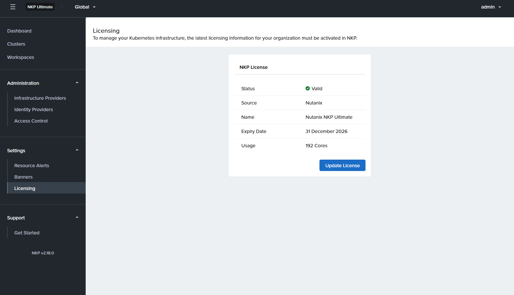
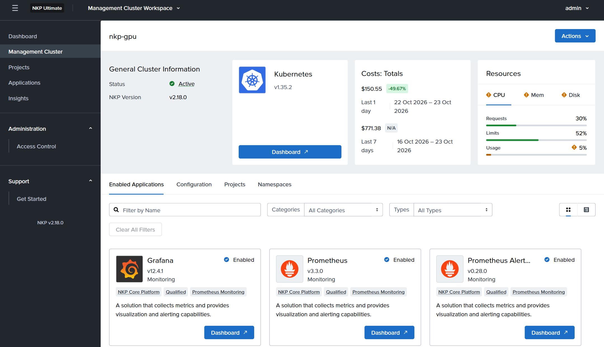
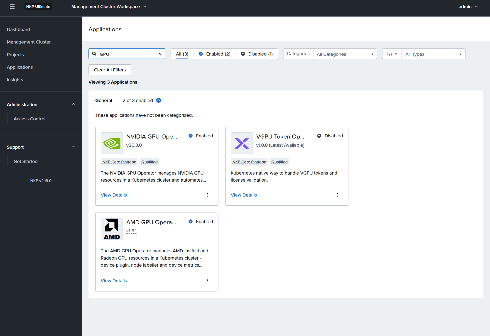
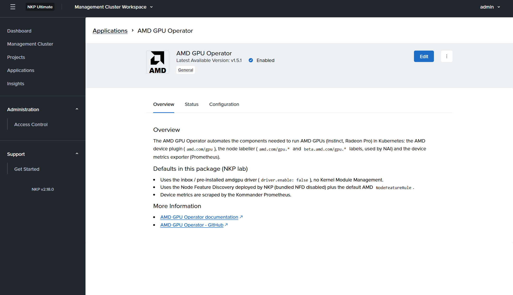
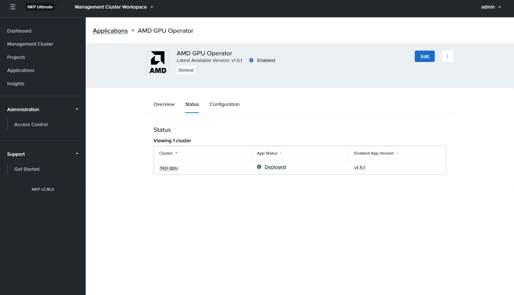
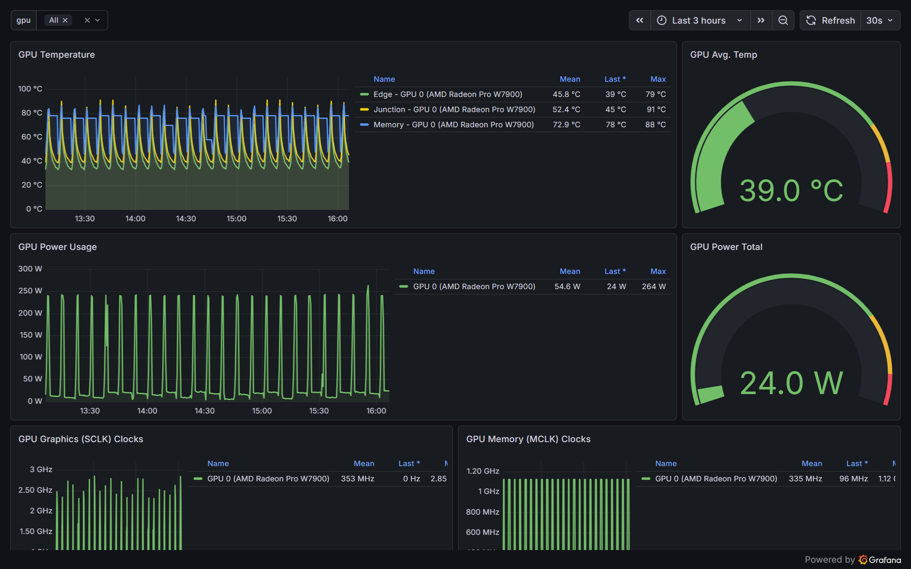

Single-Node Nutanix Kubernetes Platform, with the AMD GPU Operator in the Catalog
Build an air-gapped, self-managed NKP 2.18 cluster on one Ubuntu server, then package the AMD GPU Operator as a custom catalog application so it appears in Kommander's marketplace and can be enabled like any built-in app.
1Overview
This runbook builds a single-node, self-managed NKP 2.18 cluster from the air-gapped bundle on one Ubuntu server, then publishes the AMD GPU Operator as a custom application in Kommander's catalog, so it can be enabled from the NKP marketplace like any built-in app.
| Part | Result |
|---|---|
| Single-node NKP | Kubernetes 1.35.2 on one host (control plane runs workloads), local image registry, local storage, MetalLB, Kommander UI, NVIDIA GPU Operator |
| AMD GPU Operator in the catalog | A catalog collection in the local registry, the app card "AMD GPU Operator" in Kommander, the operator running with device plugin, node labeller and metrics exporter |
Two ways to use it: run the automated installer, which performs every step on this page by itself, or follow the steps by hand. Every manual command was run on the reference lab cluster, and the screenshots come from it. Placeholders: <host-ip> the server, <user> the SSH user, <cluster> the cluster name, <reg> the local registry (<host-ip>:5000).
2Before you start
- Ubuntu 22.04, 24.04 or 26.04 on an x86-64 server (tested: 26.04.1, kernel 7.0); at least 32 CPU threads and 128 GB RAM
- 600 GB free on a data filesystem for the bundle, registry and local volumes; 200 GB free under /var/lib
- A non-root user with sudo, reachable over SSH from the host itself
- A free range of at least 2 IP addresses on the host's subnet for MetalLB
- The NKP air-gapped bundle
nkp-air-gapped-bundle_v2.18.0_linux_amd64.tar.gz(29.3 GB) from the Nutanix portal - An NKP licence (Pro or Ultimate); Kommander shows custom catalog apps only once licensed
- For the AMD part: an AMD Radeon PRO W7900-class or Instinct GPU, and internet access from the host to rocm.github.io and Docker Hub
3Automated install
nkp-amd-gpu.sh performs every step of this guide on its own: host preparation, registry, cluster, Kommander and the AMD GPU Operator catalog app. It asks all its questions first, then runs as a background job that survives a dropped SSH session and continues by itself after a reboot. Expect 1.5 to 3 hours, most of it image pushes and the Kommander install.
- Download and unpack the kit on the server (the script plus the catalog app and the optional PCI-filter device plugin):
curl -fLO https://manmohanbrahma.github.io/ai/nkp-single-node/nkp-amd-gpu-kit.tar.gz
tar -xzf nkp-amd-gpu-kit.tar.gz && cd nkp-amd-gpu
sudo ./nkp-amd-gpu.sh --check # read-only: OS, CPU, memory, GPUs it found- Run it as the non-root user NKP should log in as:
sudo ./nkp-amd-gpu.sh
It asks for:
| Question | Notes |
|---|---|
| NKP bundle | A download link from the Nutanix portal (checked straight away, then downloaded with resume) or a local path |
| AMD GPUs for Kubernetes | Supported compute GPUs are preselected; any other AMD card is kept away from Kubernetes with vfio (one reboot, tested) or filter (a PCI-filtered device plugin built from the kit) |
| Installation folder | About 300 GB for the bundle, registry and local volumes; defaults to the largest filesystem |
| Host IP, MetalLB range, cluster name | One free address is enough; Kommander takes the first |
| Reboot | Asked only when vfio isolation needs it |
- Follow progress, and find the dashboard when it ends:
sudo tail -f /var/lib/nkp-amd/run.log # or: sudo ./nkp-amd-gpu.sh --status
sudo nkp get dashboard --kubeconfig <install-folder>/work/cluster/<cluster>.confThe run ends by checking that amd.com/gpu is allocatable, the node carries the AMD product and VRAM labels and the operator pods are running, then prints the Kommander address. Apply the NKP licence in Kommander (Settings → Licensing) to see the AMD GPU Operator card.
Every change to the host is recorded in /var/lib/nkp-amd/manifest. sudo ./nkp-amd-gpu.sh --plan previews and --uninstall reverses them: the cluster, registry, local volumes, GPU isolation and the packages the script added (never a package the OS had before).
The rest of this page is the same procedure, step by step.
4Prepare the host
NKP's installer (konvoy) expects a few host settings that a fresh Ubuntu does not have.
- Install the packages konvoy needs (on 26.04 it cannot fetch them itself):
sudo apt-get install -y --no-install-recommends podman skopeo nfs-kernel-server chrony nfs-common rpcbind \ keyutils python3-cryptography python3-pip python3-wheel ipvsadm lvm2 open-iscsi xfsprogs lsscsi \ wget curl ca-certificates pciutils patch
- Passwordless sudo for the SSH user, and swap off:
echo "<user> ALL=(ALL) NOPASSWD:ALL" | sudo tee /etc/sudoers.d/90-nkp-<user> sudo chmod 440 /etc/sudoers.d/90-nkp-<user> sudo swapoff -a && sudo sed -i -E 's|^([^#].*[[:space:]]swap[[:space:]].*)$|# \1|' /etc/fstab
- An SSH key that NKP uses to log in to the host as
<user>:
ssh-keygen -q -t ed25519 -N "" -C nkp -f ~/.ssh/nkp_ed25519 cat ~/.ssh/nkp_ed25519.pub >> ~/.ssh/authorized_keys ssh -i ~/.ssh/nkp_ed25519 -o BatchMode=yes <user>@<host-ip> sudo -n true && echo ok
- Limits for the bootstrap cluster (kind runs inside podman) and for file watches:
printf '[containers]\npids_limit = 0\n' | sudo tee /etc/containers/containers.conf printf 'fs.inotify.max_user_instances = 8192\nfs.inotify.max_user_watches = 1048576\n' | sudo tee /etc/sysctl.d/90-nkp.conf sudo sysctl -q --system sudo systemctl enable --now chrony
- Ubuntu 26.04 only: NKP's image builder expects a
cloud-init.serviceunit, which 26.04 split up. Add a no-op shim:
sudo tee /etc/systemd/system/cloud-init.service >/dev/null <<'EOF' [Unit] Description=Compat shim for cloud-init.service After=cloud-init-network.service [Service] Type=oneshot ExecStart=/bin/true RemainAfterExit=yes [Install] WantedBy=cloud-init.target EOF sudo systemctl daemon-reload
5Unpack the bundle and start a registry
The cluster pulls every image from a registry on the host. Run it as its own systemd service so it survives reboots and failed shell sessions.
cd /shared_storage/nkp
tar -xzf nkp-air-gapped-bundle_v2.18.0_linux_amd64.tar.gz # 10-20 min, creates nkp-v2.18.0/
sudo install -m 755 nkp-v2.18.0/cli/nkp /usr/local/bin/nkp
sudo install -m 755 nkp-v2.18.0/kubectl /usr/local/bin/kubectl
sudo podman pull docker.io/library/registry:2
sudo tee /etc/systemd/system/nkp-registry.service >/dev/null <<'EOF'
[Unit]
Description=Air-gap image registry for NKP
Wants=network-online.target
After=network-online.target
[Service]
ExecStartPre=-/usr/bin/podman rm -f nkp-registry
ExecStart=/usr/bin/podman run --rm --name nkp-registry --network host -e REGISTRY_HTTP_ADDR=0.0.0.0:5000 -v /shared_storage/nkp/registry:/var/lib/registry:Z docker.io/library/registry:2
ExecStop=/usr/bin/podman stop -t 10 nkp-registry
Restart=always
RestartSec=5
[Install]
WantedBy=multi-user.target
EOF
sudo mkdir -p /shared_storage/nkp/registry && sudo systemctl daemon-reload && sudo systemctl enable --now nkp-registry
curl -fsS http://<host-ip>:5000/v2/ && echo registry upPush NKP's images (20 to 40 minutes) and give the host its containerd and Kubernetes packages:
cd /shared_storage/nkp/nkp-v2.18.0
nkp push bundle --bundle container-images/konvoy-image-bundle-v2.18.0.tar,container-images/kommander-image-bundle-v2.18.0.tar,container-images/nutanix-product-catalog-v2.18.0-airgapped.tar \
--to-registry http://<host-ip>:5000 --to-registry-insecure-skip-tls-verify --image-push-concurrency 4
# Ubuntu 26.04 only: NKP ships OS packages for 22.04 and 24.04; build the 24.04 set and alias it (needs internet)
nkp create package-bundle ubuntu-24.04 --artifacts-directory image-artifacts
for f in image-artifacts/*24.04*; do ln -sf "$(basename "$f")" "${f//24.04/26.04}"; done
nkp upload image-artifacts --artifacts-directory image-artifacts --ssh-host <host-ip> --ssh-username <user> \
--ssh-private-key-file ~/.ssh/nkp_ed25519 --bundle image-artifacts/images/kubernetes-images-1.35.2-d2iq.1.tarThe bundle also has a FIPS variant (kubernetes-images-1.35.2-d2iq.1-fips.tar); use it only for a FIPS cluster.
6Local storage
NKP's default storage class, localvolumeprovisioner, turns directories under /mnt/disks into persistent volumes. Bind-mount 20 directories from the data disk there:
for i in $(seq -w 1 20); do
sudo mkdir -p /shared_storage/nkp/local-pv/vol$i /mnt/disks/vol$i
echo "/shared_storage/nkp/local-pv/vol$i /mnt/disks/vol$i none bind 0 0" | sudo tee -a /etc/fstab >/dev/null
done
sudo systemctl daemon-reload && sudo mount -a && findmnt -l | grep -c /mnt/disks/vol # 20Each volume reports the size of the whole data disk; watch real usage with df -h /shared_storage.
7Create the single-node cluster
- Describe the host in a pre-provisioned inventory. NKP expects a worker inventory too, even when it is empty:
mkdir -p ~/nkp-cluster && cd ~/nkp-cluster
for n in control-plane md-0; do cat <<EOF
---
apiVersion: infrastructure.cluster.konvoy.d2iq.io/v1alpha1
kind: PreprovisionedInventory
metadata:
name: <cluster>-$n
namespace: default
labels: {cluster.x-k8s.io/cluster-name: <cluster>, clusterctl.cluster.x-k8s.io/move: ""}
spec:
hosts: $([ $n = control-plane ] && echo "[{address: <host-ip>}]" || echo "[]")
sshConfig: {port: 22, user: <user>, privateKeyRef: {name: <cluster>-ssh-key, namespace: default}}
EOF
done > inventory.yaml- On a single node the control plane must accept workloads as soon as it exists, or Cluster API's own jobs stay Pending and the create times out. Start a helper in a second terminal that removes the taint every 10 seconds while the create runs:
while true; do sudo kubectl --kubeconfig /etc/kubernetes/admin.conf taint nodes --all \
node-role.kubernetes.io/control-plane:NoSchedule- 2>/dev/null; sleep 10; done # stop with Ctrl+C afterwards- Create the cluster (30 to 60 minutes):
nkp create cluster preprovisioned --cluster-name <cluster> --control-plane-endpoint-host <host-ip> \ --control-plane-replicas 1 --worker-replicas 0 --pre-provisioned-inventory-file inventory.yaml \ --ssh-private-key-file ~/.ssh/nkp_ed25519 --ssh-username <user> --registry-mirror-url http://<host-ip>:5000 \ --bootstrap-cluster-image /shared_storage/nkp/nkp-v2.18.0/konvoy-bootstrap-image-v2.18.0.tar --self-managed --timeout 120m
- Check that the cluster now manages itself. If the Cluster API objects did not move from the temporary bootstrap cluster, finish the move, then delete the bootstrap cluster:
export KUBECONFIG=~/nkp-cluster/<cluster>.conf kubectl get clusters.cluster.x-k8s.io -A # must list <cluster> # only if it does not: kubectl delete namespace capi-stack-operator-installer --ignore-not-found nkp create capi-components --kubeconfig $KUBECONFIG nkp move capi-resources --from-kubeconfig ~/nkp-cluster/<cluster>-bootstrap.conf --to-kubeconfig $KUBECONFIG # then, in every case: nkp delete bootstrap --kubeconfig ~/nkp-cluster/<cluster>-bootstrap.conf mkdir -p ~/.kube && cp $KUBECONFIG ~/.kube/config && chmod 600 ~/.kube/config
- One node runs every platform pod; the default limit of 110 pods per node makes the Kommander install hang. Raise it to 250:
sudo sed -i 's/^maxPods:.*/maxPods: 250/' /var/lib/kubelet/config.yaml || true
grep -q '^maxPods:' /var/lib/kubelet/config.yaml || echo 'maxPods: 250' | sudo tee -a /var/lib/kubelet/config.yaml
sudo systemctl restart kubelet
kubectl taint nodes --all node-role.kubernetes.io/control-plane:NoSchedule- 2>/dev/null; kubectl get nodes # Ready8Install Kommander
- Give MetalLB an address pool on the host's interface (first address → Kommander, the rest for later services):
kubectl apply -f - <<'EOF'
apiVersion: metallb.io/v1beta1
kind: IPAddressPool
metadata: {name: nkp-pool, namespace: metallb-system}
spec: {addresses: ["<first-ip>-<last-ip>"]}
---
apiVersion: metallb.io/v1beta1
kind: L2Advertisement
metadata: {name: nkp-l2, namespace: metallb-system}
spec: {ipAddressPools: [nkp-pool], interfaces: [<host-interface>]}
EOF- Save the Kommander configuration below as
~/nkp-cluster/kommander.yaml. Without object storage on a single host, leave Rook Ceph, Velero, logging and Insights off. The NVIDIA GPU Operator uses the driver already on the host, and CDI as its default, so containerd keeps runc as the default runtime for AMD and CPU pods:
apiVersion: config.kommander.mesosphere.io/v1alpha1
kind: Installation
apps:
cloudnative-pg: {enabled: true}
dex: {enabled: true}
dex-k8s-authenticator: {enabled: true}
external-secrets: {enabled: true}
gatekeeper: {enabled: true}
git-operator: {enabled: true}
kommander: {enabled: true}
kommander-ui: {enabled: true}
kube-prometheus-stack: {enabled: true}
kubefed: {enabled: true}
kubernetes-dashboard: {enabled: true}
kubetunnel: {enabled: true}
prometheus-adapter: {enabled: true}
reloader: {enabled: true}
traefik: {enabled: true}
traefik-forward-auth-mgmt: {enabled: true}
nvidia-gpu-operator:
enabled: true # false on a host without NVIDIA GPUs
values: |
driver:
enabled: false
toolkit:
enabled: true
cdi:
enabled: true
default: true
ageEncryptionSecretName: sops-age
clusterHostname: ""
airgapped:
enabled: true- Install it (30 to 90 minutes), then reload Grafana's data sources once (its sidecar's own reload is rejected with 401):
nkp install kommander --installer-config kommander.yaml --kubeconfig $KUBECONFIG --wait-timeout 2h \ --kommander-applications-repository /shared_storage/nkp/nkp-v2.18.0/application-repositories/kommander-applications-v2.18.0.tar.gz kubectl -n kommander exec deploy/kube-prometheus-stack-grafana -c grafana -- \ wget -qO- --post-data='' --header='X-Forwarded-User: admin' http://localhost:3000/api/admin/provisioning/datasources/reload
- Log in and license:
kubectl -n kommander get svc kommander-traefik -o jsonpath='{.status.loadBalancer.ingress[0].ip}'; echo # <kommander-ip>
nkp get dashboard --kubeconfig $KUBECONFIG # user and passwordOpen https://<kommander-ip>/dkp/kommander/dashboard, then apply the licence under Settings → Licensing. With NVIDIA GPUs, kubectl get node -o jsonpath='{.items[0].status.allocatable.nvidia\.com/gpu}' returns 1 or more once the GPU Operator is up.



9Prepare the AMD GPU
The operator in this package uses the amdgpu driver already in the kernel; it does not build or load a driver.
- Host tools and permissions (for checks such as
amd-smi):
sudo apt-get install -y rocminfo rocm-smi amd-smi libamdhip64-7 hip-utils
sudo usermod -aG render,video <user>
amd-smi list # the W7900 is listed- Keep any other AMD GPU (for example a small display card) away from Kubernetes. Bind it to
vfio-pciat boot; this needs IOMMU enabled in the BIOS and one reboot. Use the vendor:device IDs of every function of that card fromlspci -nn:
echo "options vfio-pci ids=1002:7422,1002:ab28" | sudo tee /etc/modprobe.d/90-vfio.conf printf 'softdep amdgpu pre: vfio-pci\nsoftdep snd_hda_intel pre: vfio-pci\n' | sudo tee -a /etc/modprobe.d/90-vfio.conf printf 'vfio\nvfio_iommu_type1\nvfio_pci\n' | sudo tee /etc/modules-load.d/90-vfio.conf sudo update-initramfs -u && sudo reboot
The stock AMD device plugin has no option to exclude one card, so vfio isolation is the tested route.
10Add the AMD GPU Operator to the catalog
A custom NKP catalog is a Git-style folder of applications, packed into a catalog bundle, pushed to a registry and registered as a catalog collection. Kommander then lists its apps next to the built-in ones.
1. Mirror the chart and images
helm repo add rocm https://rocm.github.io/gpu-operator && helm pull rocm/gpu-operator-charts --version v1.5.1
helm push gpu-operator-charts-v1.5.1.tgz oci://<host-ip>:5000/charts --plain-http
for img in docker.io/rocm/gpu-operator:v1.5.1 docker.io/rocm/k8s-device-plugin:latest \
docker.io/rocm/k8s-device-plugin:labeller-latest docker.io/rocm/device-metrics-exporter:v1.5.1 \
docker.io/rocm/gpu-operator-utils:v1.5.1 docker.io/rocm/test-runner:v1.5.1 \
docker.io/library/busybox:1.36 quay.io/brancz/kube-rbac-proxy:v0.18.1; do
skopeo copy --all --dest-tls-verify=false docker://$img docker://<host-ip>:5000/${img#*/}
done2. The catalog application
Download amd-gpu-catalog.tar.gz and unpack it. It holds one application in NKP's catalog layout:
applications/amd-gpu-operator/1.5.1/
metadata.yaml # card in the Kommander catalog: name, icon, licences, cert-manager dependency
kustomization.yaml
.bloodhound.yml # validation settings for nkp validate
release/
amd-gpu-operator.yaml # Flux OCIRepository (chart in the local registry) + HelmRelease
cm.yaml # default Helm values (below)
amd-metrics-config.yaml # metrics-exporter health thresholds
kustomization.yaml
grafana-dashboards/ # "AMD GPU Device Metrics" dashboard for Kommander's GrafanaSet the two placeholders before validating:
cd amd-gpu-catalog R=applications/amd-gpu-operator/1.5.1/release sed -i "s#__REGISTRY__#<host-ip>:5000#" $R/amd-gpu-operator.yaml sed -i "s#__AMD_ECC_UMC_THRESHOLD__#4000000000#" $R/amd-metrics-config.yaml
The default values in cm.yaml fit NKP:
| Setting | Value | Why |
|---|---|---|
node-feature-discovery.enabled | false | NKP already runs Node Feature Discovery; only AMD's rule is added (installdefaultNFDRule: true) |
kmm.enabled, driver.enable | false | Use the in-kernel amdgpu driver; no Kernel Module Management |
devicePlugin | device plugin + node labeller, resource_naming_strategy: single | Advertises amd.com/gpu and labels nodes with product name and VRAM |
metricsExporter | on, ServiceMonitor labelled for Kommander's Prometheus | GPU metrics in Kommander's Grafana |
metricsExporter.config | amd-metrics-config | Kernel 7.0's inbox driver reports phantom ECC errors on the W7900; the raised threshold stops the exporter marking the GPU unhealthy |
testRunner, configManager, remediation | off | Not needed on a single lab node |
3. Validate, bundle and push
nkp validate catalog-repository --repo-dir .
TAG=v1.0.$(date +%s)
nkp create catalog-bundle --repo-dir . --collection-tag $TAG # writes amd-gpu-catalog-$TAG.tar
nkp push bundle --bundle amd-gpu-catalog-$TAG.tar --to-registry http://<host-ip>:5000 --to-registry-insecure-skip-tls-verify4. Register the collection and deploy the app
nkp create catalog-collection --url oci://<host-ip>:5000/amd-gpu-catalog/collection --tag $TAG \
--workspace kommander-workspace --insecure
kubectl -n kommander get app amd-gpu-operator-1.5.1 # appears within a minuteThe app now shows in Kommander under the workspace's Applications catalog as AMD GPU Operator. Enable it there, or from the command line:
nkp create appdeployment amd-gpu-operator --app amd-gpu-operator-1.5.1 --workspace kommander-workspace



To publish a changed version later, bundle and push with a new tag, then point the collection at it:
kubectl -n kommander patch ocirepository amd-gpu-catalog-collection --type merge -p "{\"spec\":{\"ref\":{\"tag\":\"$TAG\"}}}"11Verify
Output below is from the reference cluster.
kubectl -n kommander get app,appdeployment | grep amd
kubectl -n kommander get helmrelease amd-gpu-operator
kubectl get pods -A | grep -E 'default-(device-plugin|node-labeller|metrics-exporter)|gpu-operator-charts'
kubectl get node -o jsonpath='{.items[0].status.allocatable}'; echo
kubectl get node --show-labels | tr ',' '\n' | grep 'amd.com/gpu\.\(product-name\|vram\)'amd-gpu-operator-1.5.1 amd-gpu-operator 1.5.1
amd-gpu-operator amd-gpu-operator-1.5.1
amd-gpu-operator True Helm install succeeded for release kommander/amd-gpu-operator.v1 with chart gpu-operator-charts@v1.5.1
kommander amd-gpu-operator-gpu-operator-charts-controller-manager-... Running
kommander default-device-plugin-... Running
kommander default-metrics-exporter-... Running
kommander default-node-labeller-... Running
{"amd.com/gpu":"1","cpu":"192",...,"nvidia.com/gpu":"1","pods":"250"}
amd.com/gpu.product-name=AMD_Radeon_Pro_W7900
amd.com/gpu.vram=45GA test pod requesting amd.com/gpu: 1 should run rocm-smi and see exactly one GPU. In Kommander's Grafana (https://<kommander-ip>/dkp/grafana), the "AMD GPU Device Metrics Exporter" dashboard shows utilisation, memory, temperature, power and clocks.

12Troubleshooting
| Symptom | Cause | Fix |
|---|---|---|
nkp create cluster times out after about 20 min waiting for Cluster API | Control-plane taint blocks Cluster API's jobs on a single node | Keep the taint-removal loop running during the create; then finish the move as in step 4 |
| Bootstrap cluster fails with process limits | Podman's default 2048-process limit | pids_limit = 0 in /etc/containers/containers.conf |
| Konvoy fails on Ubuntu 26.04 looking for cloud-init or packages | 26.04 is newer than NKP 2.18's tested releases | The cloud-init shim, the pre-installed packages and the 24.04 OS bundle aliased as 26.04 |
| Kommander install hangs | 110-pod limit on the only node | kubelet maxPods: 250 |
| Registry gone after a shell session ended | A podman run -d container dies with its session's cgroup | Run the registry as the nkp-registry systemd service |
| Grafana shows "No data" | Datasource sidecar reload rejected (401) | The one-off reload with X-Forwarded-User: admin |
| AMD app not visible in the Kommander catalog | NKP not licensed, or the collection not registered | Apply the licence; kubectl -n kommander get ocirepository amd-gpu-catalog-collection |
| Catalog changes not picked up | The app's source refreshes only every few hours | New tag + patch the collection, then reconcile the app's OCIRepository |
amd.com/gpu drops to 0 | Metrics exporter marks the W7900 unhealthy over phantom ECC errors | Raise GPU_ECC_UNCORRECT_UMC in amd-metrics-config (done in this package) |
A display GPU appears as amd.com/gpu | The stock device plugin advertises every AMD GPU | Bind it to vfio-pci at boot, as in Prepare the AMD GPU |
13Downloads
| File | Contents |
|---|---|
| nkp-amd-gpu-kit.tar.gz | The automated installer nkp-amd-gpu.sh with the AMD GPU Operator catalog app and the PCI-filter device-plugin source and patch (automated install) |
| nkp-amd-gpu.sh | The installer script on its own, to read before running |
| amd-gpu-catalog.tar.gz | The AMD GPU Operator 1.5.1 catalog application, ready for nkp validate and nkp create catalog-bundle |